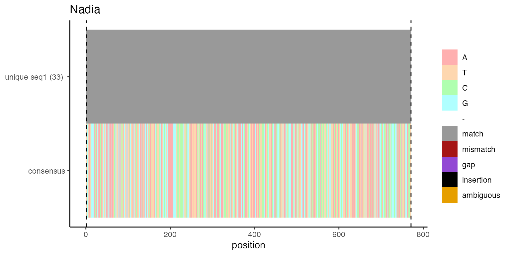
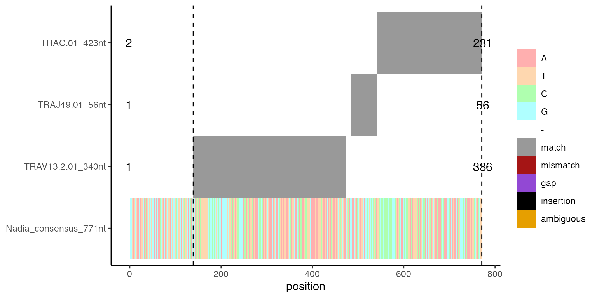

prepare_tcr_seq_data.Rmd
install.packages("tidyverse")
install.packages("randomNames")
install.packages("BiocManager")
install.packages("parallel")
BiocManager::install("Biostrings")
BiocManager::install("protR")Prepare a folder with sub-folder of your samples.
# vdj_path is the directory on your disk
list.files(vdj_path)Each folder must contain the 6 files from the CellRanger output which are required to prepare a data frame
list.files(file.path(vdj_path, "Pat3_rep1_blood"))Read the files one by one and modify one or the other column name. Some operations are optional, others are necessary to join the data frames below.
consensus_annotations <- dplyr::bind_rows(lapply(list.files(vdj_path, "consensus_annotations\\.csv", recursive = T, full.names = T), function(x) {
read.csv(x, sep = ",") %>% dplyr::mutate(sample = basename(dirname(x)))
})) %>%
dplyr::rename("cell.ranger.clonotype.id" = clonotype_id, "cell.ranger.consensus.id" = consensus_id) %>%
dplyr::mutate(cell.ranger.consensus.id = as.numeric(str_extract(cell.ranger.consensus.id, "[:digit:]{1,}$"))) %>%
dplyr::mutate(cell.ranger.clonotype.id = as.numeric(str_extract(cell.ranger.clonotype.id, "[:digit:]{1,}")))
clonotypes <- dplyr::bind_rows(lapply(list.files(vdj_path, "clonotypes\\.csv", recursive = T, full.names = T), function(x) {
read.csv(x, sep = ",") %>% dplyr::mutate(sample = basename(dirname(x)))
})) %>%
dplyr::rename("cell.ranger.clonotype.id" = clonotype_id) %>%
dplyr::mutate(cell.ranger.clonotype.id = as.numeric(str_extract(cell.ranger.clonotype.id, "[:digit:]{1,}")))
contig_annotations <- dplyr::bind_rows(lapply(list.files(vdj_path, "filtered_contig_annotations\\.csv", recursive = T, full.names = T), function(x) {
read.csv(x, sep = ",") %>% dplyr::mutate(sample = basename(dirname(x)))
})) %>%
dplyr::rename("Barcode" = barcode, "cell.ranger.contig.id" = contig_id, "cell.ranger.clonotype.id" = raw_clonotype_id, "cell.ranger.consensus.id" = raw_consensus_id) %>%
dplyr::mutate(Barcode = str_replace(Barcode, "-1$", ""), cell.ranger.contig.id = as.numeric(str_extract(cell.ranger.contig.id, "[:digit:]{1,}$"))) %>%
dplyr::mutate(cell.ranger.consensus.id = as.numeric(str_extract(cell.ranger.consensus.id, "[:digit:]{1,}$"))) %>%
dplyr::mutate(cell.ranger.clonotype.id = as.numeric(str_extract(cell.ranger.clonotype.id, "[:digit:]{1,}")))
consensus_fasta <- dplyr::bind_rows(lapply(list.files(vdj_path, "consensus\\.fasta$", recursive = T, full.names = T), function(x) {
stack(protr::readFASTA(x)) %>% dplyr::mutate(sample = basename(dirname(x)))
})) %>%
dplyr::rename("cell.ranger.consensus.seq" = values) %>%
tidyr::separate(ind, into = c("cell.ranger.clonotype.id", "temp", "cell.ranger.consensus.id"), sep = "_") %>%
dplyr::select(-temp) %>%
dplyr::mutate(cell.ranger.consensus.id = as.numeric(cell.ranger.consensus.id)) %>%
dplyr::mutate(cell.ranger.clonotype.id = as.numeric(str_extract(cell.ranger.clonotype.id, "[:digit:]{1,}$")))
consensus_ref_fasta <- dplyr::bind_rows(lapply(list.files(vdj_path, "concat_ref\\.fasta$", recursive = T, full.names = T), function(x) {
stack(protr::readFASTA(x)) %>% dplyr::mutate(sample = basename(dirname(x)))
})) %>%
dplyr::rename("cell.ranger.ref.seq" = values) %>%
tidyr::separate(ind, into = c("cell.ranger.clonotype.id", "temp1", "temp2", "cell.ranger.ref.seq.id"), sep = "_") %>%
dplyr::select(-c(temp1, temp2)) %>%
dplyr::mutate(cell.ranger.ref.seq.id = as.numeric(cell.ranger.ref.seq.id)) %>%
dplyr::mutate(cell.ranger.clonotype.id = as.numeric(str_extract(cell.ranger.clonotype.id, "[:digit:]{1,}")))
contig_fasta <- dplyr::bind_rows(lapply(list.files(vdj_path, "filtered_contig\\.fasta$", recursive = T, full.names = T), function(x) {
stack(protr::readFASTA(x)) %>% dplyr::mutate(sample = basename(dirname(x)))
})) %>%
dplyr::rename("cell.ranger.contig.seq" = values) %>%
tidyr::separate(ind, into = c("Barcode", "temp", "cell.ranger.contig.id"), sep = "_") %>%
dplyr::select(-c(temp)) %>%
dplyr::mutate(Barcode = str_replace(Barcode, "-1$", "")) %>%
dplyr::mutate(cell.ranger.contig.id = as.numeric(cell.ranger.contig.id))Join the data frames. The only source for cell-barcodes are the contig-files.
consensus.data <-
consensus_annotations %>%
dplyr::full_join(consensus_fasta, by = c("cell.ranger.clonotype.id" = "cell.ranger.clonotype.id", "cell.ranger.consensus.id" = "cell.ranger.consensus.id", "sample" = "sample")) %>%
dplyr::full_join(consensus_ref_fasta, by = c("cell.ranger.clonotype.id" = "cell.ranger.clonotype.id", "cell.ranger.consensus.id" = "cell.ranger.ref.seq.id", "sample" = "sample"))
contig.data <- contig_annotations %>% dplyr::full_join(contig_fasta, by = c("cell.ranger.contig.id" = "cell.ranger.contig.id", "Barcode" = "Barcode", "sample" = "sample"))
contig.data.barcodes <- contig.data %>% dplyr::distinct(sample, cell.ranger.clonotype.id, Barcode)Make one final data frame in long format.
Even though CellRanger annotates VDJ chain, we may repeat that ourselves as well. Also thins brings the IMGT nomenclature into our data frame. For that we have to prepare a respective data frame from the data available on IMGTs website. This may be done with the igsc:imgt_tcr_segment_prep(). More easily: The respective data frames for human and mouse are included in this package, with data downloaded Oct-2021 from IMGT.
# optional:
# imgt_ref <- igsc::imgt_tcr_segment_prep()
# see ?igsc::imgt_tcr_segment_prep()
imgt_ref <- readRDS(system.file("extdata", "IMGT_ref/human/hs.rds", package = "igsc"))
# this calculation may take a while depend up on the number of clonotypes etc. especially on a single core (not mclapply but lapply only)
for (VJ in c("V", "J")) {
clonotype.data.long.format[,paste0(VJ, ".allele")] <- unlist(parallel::mclapply(split(clonotype.data.long.format[,c("cell.ranger.consensus.seq", VJ)], seq(nrow(clonotype.data.long.format))), function(x) {
if (length(which(imgt_ref$Gene == x[1,2])) == 1) {
return(imgt_ref[which(imgt_ref$Gene == x[1,2]), "Allele"])
} else if (length(which(imgt_ref$Gene == x[1,2])) > 1) {
max.ind <- which.max(Biostrings::pairwiseAlignment(subject = Biostrings::DNAString(x[1,1]), pattern = Biostrings::DNAStringSet(imgt_ref[imgt_ref$Gene == x[1,2],"seq.nt"]), type = "local", scoreOnly = T))
return(imgt_ref[which(imgt_ref$Gene == x[1,2]), "Allele"][max.ind])
} else if (length(which(imgt_ref$Gene == x[1,2])) == 0) {
return(NA)
}
}, mc.cores = parallel::detectCores()))
}With the randomNames packages you may give your clonotypes a catchy name, as an alternative to e.g. “clonotype1001”. The sampling from randomNames does not work perfect though, so we use a custom loop to avoid duplicate names.
# in this case we trust the clonotype assignment from CellRanger but one could also check that
cls <- unique(clonotype.data.long.format$cell.ranger.clonotype.id)
names <- c()
for (i in seq_along(cls)) {
name <- trimws(randomNames::randomNames(1, which.names = "first"))
while(name %in% names) {
name <- trimws(randomNames::randomNames(1, which.names = "first"))
}
names <- c(names, name)
}
length(names) == unique(length(names))
cls <- stats::setNames(object = names, nm = cls)
clonotype.data.long.format$clonotype_name <- cls[clonotype.data.long.format$cell.ranger.clonotype.id]Prepare a data frame in the wide format. Long or wide format may be useful in different scenarios.
# https://github.com/tidyverse/tidyr/issues/1114
collapse.fun <- function(x) {
paste(x,collapse = ",")
}
clonotype.data.wide.format <-
clonotype.data.long.format %>%
dplyr::select(chain, Barcode, cell.ranger.clonotype.id, sample, CDR3.nt, CDR3.aa, V, J, C, cell.ranger.consensus.seq, cell.ranger.ref.seq, V.allele, J.allele, clonotype_name) %>%
tidyr::pivot_wider(names_from = chain, values_from = c(CDR3.nt, CDR3.aa, V, J, C, cell.ranger.consensus.seq, cell.ranger.ref.seq, V.allele, J.allele), values_fn = collapse.fun)
clonotype.data.wide.format <- as.data.frame(clonotype.data.wide.format)
# test if every name is unique to on cell.ranger.clonotype.id
check <-
clonotype.data.wide.format %>%
dplyr::distinct(clonotype_name, CDR3.nt_TRA, CDR3.nt_TRB, cell.ranger.clonotype.id) %>%
dplyr::group_by(clonotype_name) %>%
dplyr::summarise(levels.per.clonotype.name = n()) %>%
dplyr::ungroup() %>%
dplyr::pull(levels.per.clonotype.name)
all(check == 1)Save the processed clonotype data. The wide format may be used to create meta-data columns in the Seurat Object. That way the phenotype data are complemented with clonotype information and are readily available e.g. as color code on a dimension reduction plot or so.
Now everything is set up to systematically align IMGT TCR reference gene segments to our sequencing data of TCRs.
# lets find an expanded clonotype_name
top_expanded_clonotypes <- sort(table(cl[["wide"]]$clonotype_name), decreasing = T)
head(top_expanded_clonotypes)
#>
#> Nadia Jacy Jessaki Nishika Waatiq Niraj
#> 33 20 17 16 16 15
# use the TCR that has been detected in most single cell transcriptomes
# check the documentation of align_imgt_ref_to_TCR_seq to understand the inputs
align_list_TRA <- igsc::align_imgt_ref_to_TCR_seq(chain = "TRA", TCR = setNames(names(top_expanded_clonotypes)[1], "clonotype_name"), cl_long = cl[["long"]], imgt_ref = imgt_ref)
align_list_TRB <- igsc::align_imgt_ref_to_TCR_seq(chain = "TRB", TCR = setNames(names(top_expanded_clonotypes)[1], "clonotype_name"), cl_long = cl[["long"]], imgt_ref = imgt_ref)The output of align_imgt_ref_to_TCR_seq contains several plots and sequence information.
names(align_list_TRA[[1]])
#> [1] "data" "layers" "scales" "mapping" "theme" "coordinates" "facet" "plot_env" "labels"
# this plot shows how many different unique sequences existed in cl_long; source column is cell.ranger.consensus.seq
# in different cells (single cell transcriptomes) the cell.ranger.consensus.seq may differ slightly but still the TCR is grouped into one clonotype
# sometimes there are irrelevant sequence differences at the beginning or the end, which do not include the V(D)J-region
# if there are at least 2 different ones the consensus is used for further processsing
align_list_TRA[[1]]
# the consensus sequences is available at the second index
align_list_TRA[[2]]
#> Nadia_consensus
#> "TGGGGTCTATTGGCTGAGTAGACAATGTGAGAAACCACTATGATTGTTAGAGGAAAGAAAGGAATACCCGATGATGGAAGTAGCTCTTATGGCTGGAGATTGCAGGTTTATGACTGATCCTATTTGGGAAGAACAATGATGGCAGGCATTCGAGCTTTATTTATGTACTTGTGGCTGCAGCTGGACTGGGTGAGCAGAGGAGAGAGTGTGGGGCTGCATCTTCCTACCCTGAGTGTCCAGGAGGGTGACAACTCTATTATCAACTGTGCTTATTCAAACAGCGCCTCAGACTACTTCATTTGGTACAAGCAAGAATCTGGAAAAGGTCCTCAATTCATTATAGACATTCGTTCAAATATGGACAAAAGGCAAGGCCAAAGAGTCACCGTTTTATTGAATAAGACAGTGAAACATCTCTCTCTGCAAATTGCAGCTACTCAACCTGGAGACTCAGCTGTCTACTTTTGTGCAGAGGCATCCGAGGGGAACACCGGTAACCAGTTCTATTTTGGGACAGGGACAAGTTTGACGGTCATTCCAAATATCCAGAACCCTGACCCTGCCGTGTACCAGCTGAGAGACTCTAAATCCAGTGACAAGTCTGTCTGCCTATTCACCGATTTTGATTCTCAAACAAATGTGTCACAAAGTAAGGATTCTGATGTGTATATCACAGACAAAACTGTGCTAGACATGAGGTCTATGGACTTCAAGAGCAACAGTGCTGTGGCCTGGAGCAACAAATCTGACTTTGCATGTGCAAACGCCTTC"
# at indices 3 and 4 are alignment plots (and the respective data frames) for V(D)JC or V(D)J
# these plots are made with a custom made function MultiplePairwiseAlignmentsToOneSubject
# the names on the y-axis indicate the pattern name ist the full length in nt
# the number-annotations in the plot indicate the first and last in the alignment of each pattern
# the vertical dashed lines indicate the lower and upper limit of the all patterns in the subject
align_list_TRA[[3]][[2]]
# the last sub-index contains the alignment limits of the subject, your TCR (vertical dashed lines)
align_list_TRA[[3]][[5]]
#> [1] 139 771
# the last index of align_list_TRA contains the V(D)J-sequence of your TCR (sequence between the vertical lines of align_list_TRA[[4]][[2]])
align_list_TRA[[5]]
#> Nadia_TRA
#> "ATGGCAGGCATTCGAGCTTTATTTATGTACTTGTGGCTGCAGCTGGACTGGGTGAGCAGAGGAGAGAGTGTGGGGCTGCATCTTCCTACCCTGAGTGTCCAGGAGGGTGACAACTCTATTATCAACTGTGCTTATTCAAACAGCGCCTCAGACTACTTCATTTGGTACAAGCAAGAATCTGGAAAAGGTCCTCAATTCATTATAGACATTCGTTCAAATATGGACAAAAGGCAAGGCCAAAGAGTCACCGTTTTATTGAATAAGACAGTGAAACATCTCTCTCTGCAAATTGCAGCTACTCAACCTGGAGACTCAGCTGTCTACTTTTGTGCAGAGGCATCCGAGGGGAACACCGGTAACCAGTTCTATTTTGGGACAGGGACAAGTTTGACGGTCATTCCAA"